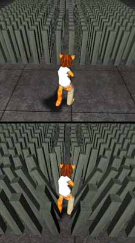

Tamearia Reactive Grass
This small script is for grass/etc that reacts when you, bending away from you when you get close to it then returning upright when you move away.
class ReactiveGrass extends Actor placeable; var TameariaController TC; var() int EffectDistance; event Trigger(Actor Other, Pawn EventInstigator) { TC = TameariaController(Level.GetLocalPlayerController()); Enable('tick'); } event UnTrigger(Actor Other, Pawn EventInstigator) { Disable('tick'); } function tick(float dt) { local rotator R; if(TC != none && TC.Pawn != none && VSize(TC.Pawn.Location - Location) < EffectDistance) { R = rotator(Location - TC.Pawn.Location); if(R.Yaw > -1 && R.Yaw < 16385) { R.Pitch = (sin(R.Yaw*3.1415/32768)*8000 - 8000) * -((VSize(TC.Pawn.Location - Location)/EffectDistance) - 1); R.Roll = (sin(R.Yaw*3.1415/32768)*8000) * -((VSize(TC.Pawn.Location - Location)/EffectDistance) - 1); } else if(R.Yaw > 16384 && R.Yaw < 32769) { R.Pitch = (-(sin(R.Yaw*3.1415/32768)*8000 - 8000)) * -((VSize(TC.Pawn.Location - Location)/EffectDistance) - 1); R.Roll = (sin(R.Yaw*3.1415/32768)*8000) * -((VSize(TC.Pawn.Location - Location)/EffectDistance) - 1); } else if(R.Yaw > -32769 && R.Yaw < -16384) { R.Pitch = (-(sin(-R.Yaw*3.1415/32768)*8000 - 8000)) * -((VSize(TC.Pawn.Location - Location)/EffectDistance) - 1); R.Roll = (-sin(-R.Yaw*3.1415/32768)*8000) * -((VSize(TC.Pawn.Location - Location)/EffectDistance) - 1); } else if(R.Yaw > -16385 && R.Yaw < 0) { R.Pitch = (sin(-R.Yaw*3.1415/32768)*8000 - 8000) * -((VSize(TC.Pawn.Location - Location)/EffectDistance) - 1); R.Roll = (-sin(-R.Yaw*3.1415/32768)*8000) * -((VSize(TC.Pawn.Location - Location)/EffectDistance) - 1); } R.Yaw = 0; SetRotation(R); } } defaultproperties { EffectDistance=128 }
Using this actor, you would place a Trigger with a radius large enough to cover the area they are in + the EffectDistance. This way they're not Ticking all the time, only when you're close to them. These should be used in moderation, any more than what I have in the following pic for any given area will start to slow down the game.

Comments
Wormbo: Instead of using triggering to enable/disable Tick, wouldn't it be more efficient to extend the individual actors' collision cylinders and get active as soon as a (valid) pawn touches them? That way the effect could handle multiple pawns more easily as well.
T1: I believe it probably would be faster using collision cylinders, also.
Angel_Mapper Ah yes, thank you. I don't know about the multiple pawns though, although I could probably hold an array of all pawns touching it, then add all the vectors to get the bending direction.
Foxpaw: There is already an array of all actors touching a given actor: The "touching" property of actor.
MythOpus: I believe I solved the problem of bot support and multiple pawns in group of these actors. Whether multiple Player controlled pawns work is beyond me however because I can't really test that part out. I disabled the ability to enable\disable the tick function as it made things look bad when you left the group of actors and there were still people running around in there.
class ReactiveCornStalks extends Actor placeable; var PlayerController PC; var Bot B; var() int EffectDistance; //event Trigger(Actor Other, Pawn EventInstigator) //{ // PC = xPlayer(Level.GetLocalPlayerController()); // B = xBot(Level.ControllerList); // Enable('tick'); //} //event UnTrigger(Actor Other, Pawn EventInstigator) //{ // Disable('tick'); //} function tick(float dt) { local rotator R; local rotator BR; PC = xPlayer(Level.GetLocalPlayerController()); B = xBot(Level.ControllerList); ForEach DynamicActors(class'PlayerController', PC) { if(PC != none && PC.Pawn != none && VSize(PC.Pawn.Location - Location) < EffectDistance) { R = rotator(Location - PC.Pawn.Location); if(R.Yaw > -1 && R.Yaw < 16385) { R.Pitch = (sin(R.Yaw*3.1415/32768)*8000 - 8000) * -((VSize(PC.Pawn.Location - Location)/EffectDistance) - 1); R.Roll = (sin(R.Yaw*3.1415/32768)*8000) * -((VSize(PC.Pawn.Location - Location)/EffectDistance) - 1); } else if(R.Yaw > 16384 && R.Yaw < 32769) { R.Pitch = (-(sin(R.Yaw*3.1415/32768)*8000 - 8000)) * -((VSize(PC.Pawn.Location - Location)/EffectDistance) - 1); R.Roll = (sin(R.Yaw*3.1415/32768)*8000) * -((VSize(PC.Pawn.Location - Location)/EffectDistance) - 1); } else if(R.Yaw > -32769 && R.Yaw < -16384) { R.Pitch = (-(sin(-R.Yaw*3.1415/32768)*8000 - 8000)) * -((VSize(PC.Pawn.Location - Location)/EffectDistance) - 1); R.Roll = (-sin(-R.Yaw*3.1415/32768)*8000) * -((VSize(PC.Pawn.Location - Location)/EffectDistance) - 1); } else if(R.Yaw > -16385 && R.Yaw < 0) { R.Pitch = (sin(-R.Yaw*3.1415/32768)*8000 - 8000) * -((VSize(PC.Pawn.Location - Location)/EffectDistance) - 1); R.Roll = (-sin(-R.Yaw*3.1415/32768)*8000) * -((VSize(PC.Pawn.Location - Location)/EffectDistance) - 1); } R.Yaw = 0; SetRotation(R); } } ForEach DynamicActors(class'Bot', B) { if(B != none && B.Pawn != none && VSize(B.Pawn.Location - Location) < EffectDistance) { BR = rotator(Location - B.Pawn.Location); if(BR.Yaw > -1 && BR.Yaw < 16385) { BR.Pitch = (sin(BR.Yaw*3.1415/32768)*8000 - 8000) * -((VSize(B.Pawn.Location - Location)/EffectDistance) - 1); BR.Roll = (sin(BR.Yaw*3.1415/32768)*8000) * -((VSize(B.Pawn.Location - Location)/EffectDistance) - 1); } else if(BR.Yaw > 16384 && BR.Yaw < 32769) { BR.Pitch = (-(sin(BR.Yaw*3.1415/32768)*8000 - 8000)) * -((VSize(B.Pawn.Location - Location)/EffectDistance) - 1); BR.Roll = (sin(BR.Yaw*3.1415/32768)*8000) * -((VSize(B.Pawn.Location - Location)/EffectDistance) - 1); } else if(BR.Yaw > -32769 && BR.Yaw < -16384) { BR.Pitch = (-(sin(-BR.Yaw*3.1415/32768)*8000 - 8000)) * -((VSize(B.Pawn.Location - Location)/EffectDistance) - 1); BR.Roll = (-sin(-BR.Yaw*3.1415/32768)*8000) * -((VSize(B.Pawn.Location - Location)/EffectDistance) - 1); } else if(BR.Yaw > -16385 && BR.Yaw < 0) { BR.Pitch = (sin(-BR.Yaw*3.1415/32768)*8000 - 8000) * -((VSize(B.Pawn.Location - Location)/EffectDistance) - 1); BR.Roll = (-sin(-BR.Yaw*3.1415/32768)*8000) * -((VSize(B.Pawn.Location - Location)/EffectDistance) - 1); } BR.Yaw = 0; SetRotation(BR); } } }
It all works fairly well, although there are a few glitches when pawns die and the actors don't go upright again.
Angel_Mapper Ouch, two ForEach's every tick? It would probably be faster to iterate through the Level.ControllerList.
T1: Yah, that's pretty bad. I think using collision cylinders and Touch would be better, as stated before. It'd probably even work in multiplayer for players,bots, invasion monsters, and vehicles.